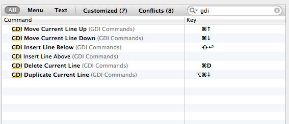

相信有一些小伙伴即使用着高大上的Xcode，也还是习惯用Eclipse的一些更亲民的快捷键。
那么就将搜集到的定制Eclipse快捷键的方法分享在这里，缺点是每次Xcode升级，需要重新配置，不过有些插件可以统一管理Xcode的配置文件和插件，这里就不讲了。
首先找到Xcode中的自带的配置文件
/Applications/Xcode.app/Contents/Frameworks/IDEKit.framework/Versions/A/Resources/
IDETextKeyBindingSet.plist 这个文件里配置了一些可以设置快捷键的操作, 使用常用的编辑器打开它（需要root权限）。
然后把这段配置
<key>GDI Commands</key>
<dict>
<key>GDI Duplicate Current Line</key>
<string>selectLine:, copy:, moveToEndOfLine:, insertNewline:, paste:, deleteBackward:</string>
<key>GDI Delete Current Line</key>
<string>moveToEndOfLine:, deleteToBeginningOfLine:, deleteBackward:, moveDown:, moveToEndOfLine:</string>
<key>GDI Move Current Line Up</key>
<string>selectLine:, cut:, moveUp:, moveToBeginningOfLine:, insertNewLine:, paste:, moveBackward:</string>
<key>GDI Move Current Line Down</key>
<string>selectLine:, cut:, moveDown:, moveToBeginningOfLine:, insertNewLine:, paste:, moveBackward:</string>
<key>GDI Insert Line Above</key>
<string>moveUp:, moveToEndOfLine:, insertNewline:</string>
<key>GDI Insert Line Below</key>
<string>moveToEndOfLine:, insertNewline:</string>
</dict>
放到上面提到的IDETextKeyBindingSet.plist里，放在文件的最后的这两行之前：
</dict>
</plist>
配置解读：
key是名称，对应的string是对应的一组操作。
- GDI Duplicate Current Line 复制当前行到下面一行
- GDI Delete Current Line 删除当前行
- GDI Move Current Line Up 把当前行往上移动一行
- GDI Move Current Line Down 把当前行往下移动一行
- GDI Insert Line Above 在当前行上面增加一空行
- GDI Insert Line Below 在当前行下面增加一空行（不管光标是否在行尾）
copy以后重启Xcode，在Xcode菜单中，打开Preferences，选中Key Binding，在右上方搜索GDI, 会出现类似下图的显示，如果没有的话，请检查上面的每步操作。

双击右边的空白处，就可以为每个功能设置不同的快捷键。
本文参考自：Xcode自定义Eclipse中常用的快捷键